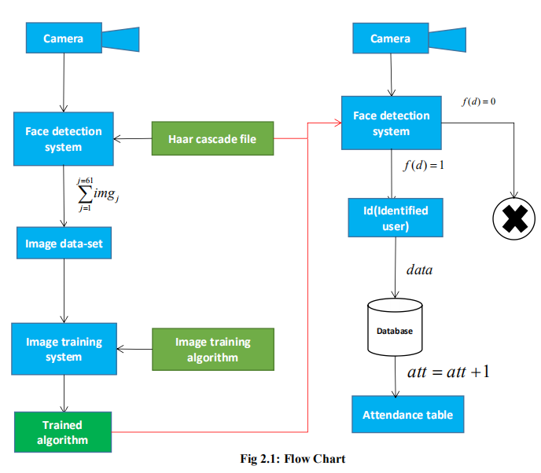
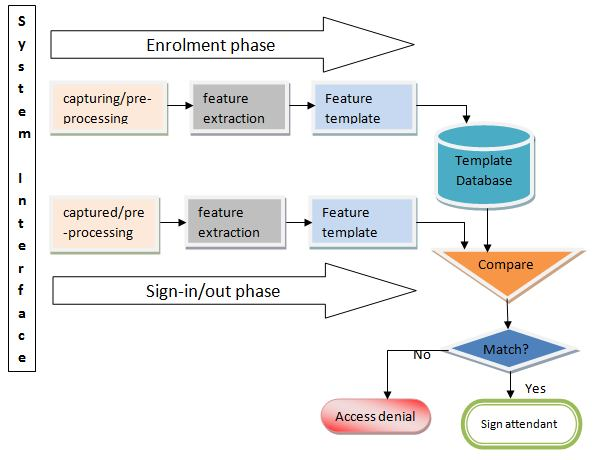
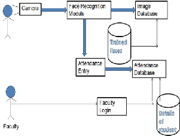
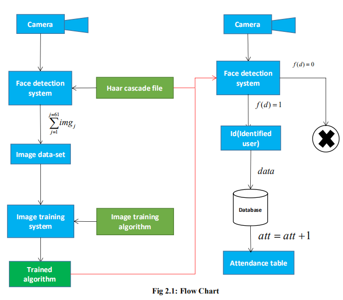
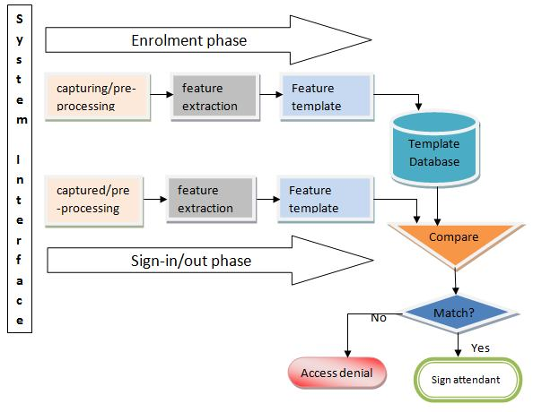
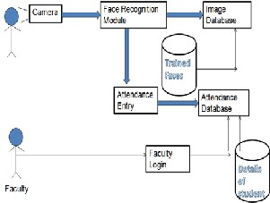

Welcome to My Personal Website
Asa Vamsi
University of Alabama at Birmingham
Asa Vamsi
University of Alabama at Birmingham


Secure face recognition software could save you thousands in employee time theft. Move from a traditional push card system and turn hours into seconds. Get a demo today. Real-Time Data. Satisfaction Guarantee. Money Back Guarantee. Financing Available. Save Time and Money. Trusted By Over 50,000. 30 Day Guarantee. Types: Fingerprint Time Clocks, Proximity Card Time Clock.
 




